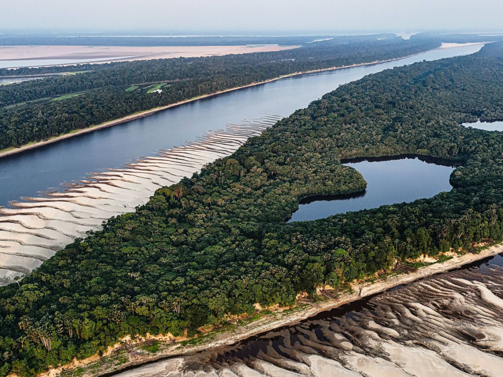
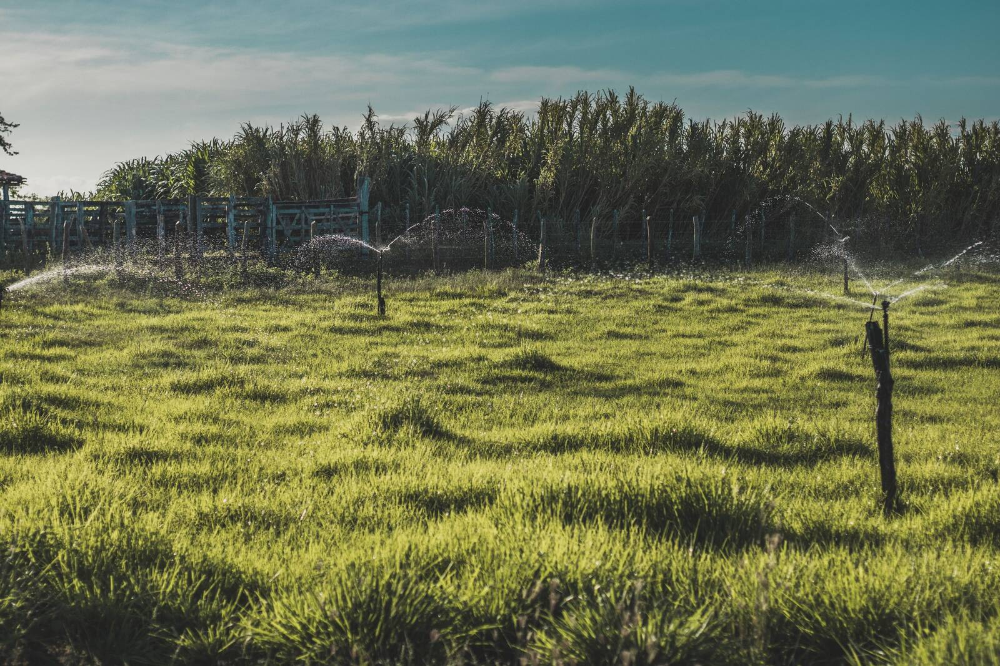
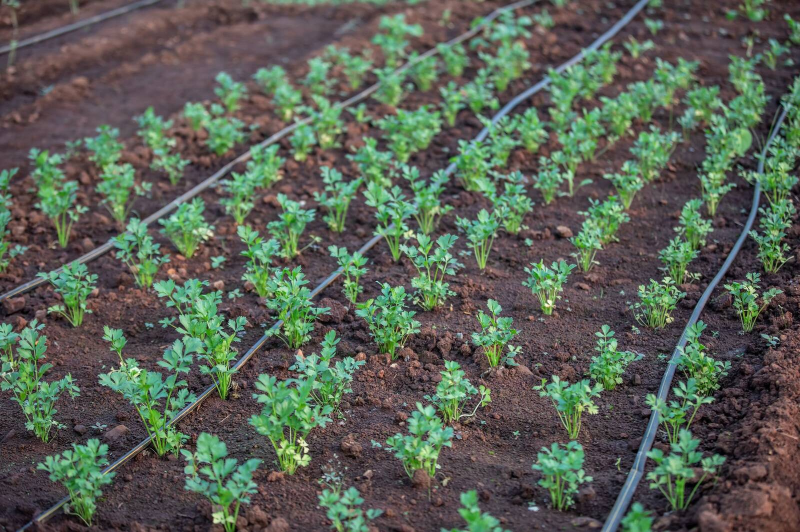
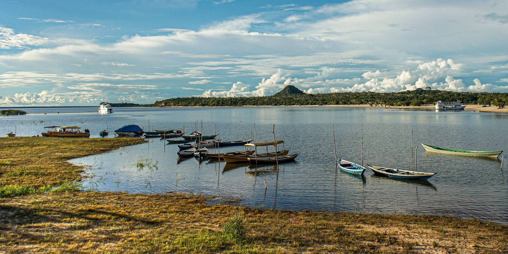

For companies and investors
Water risk starts at the source
In the dry season the river drops and the well has to go deeper. That is where, on a farm that supplies you, the harvest is won or lost. We bring solar irrigation to those farms and show what happens to the water.

- Water to the root zoneMicro-sprinklers or drip, when the soil asks
- A pump that runs on sunNo diesel for pumping, no wait for the grid
- Records per plotPump hours, energy and soil moisture
The water
Water in the dry season
Basin-level risk maps tell you where to look. What decides the harvest happens on the farm itself: in July the river is low, and the crop still needs water.
- The riverIn the dry season the river runs low, just when the crop needs water most, and every farm along it pumps more.
- The wellWhen the river is not enough, pumping moves to the wells. Wells must be registered and every withdrawal needs a water-use permit (the outorga), yet nobody knows for sure how many wells the country has.
- The harvestAn açaí palm in production cannot go more than two weeks without water, and in the dry season cocoa flowering drops sharply. In Bahia, irrigated cocoa reaches 1,500 kg/ha against 600 kg/ha without irrigation.
- The qualitySometimes the problem is quality: river water that needs treatment before it can reach the crop.
Sources: Embrapa, Cultivo do açaizeiro em terra firme (2025); Embrapa, Nangoi et al. (2006); Siqueira (2018), cited in Silva, UFRB thesis (2020).

In the field
More crop per liter
Producing more with less water is the aim of every system. The comparison is with irrigating on a fixed schedule or by eye, without a sensor in the soil.
- Water to the root zoneFor trees such as cocoa and açaí, Dutch Flow Technology recommends micro-sprinklers; for vegetables and row crops, drip. The water goes where the roots drink.
- The pump runs when the soil asksSoil-moisture sensors drive the irrigation. Nobody waters out of habit, and water does not run short at the moment that decides the harvest.
- Sun instead of dieselThe pump runs on solar power: no diesel for pumping, and no waiting for the grid to reach the field.
- After the harvestThe solar cold room, a new line, is built to cut post-harvest losses. Fruit that spoils takes the water that grew it along with it.
How much more per liter depends on the crop, the soil and how the farm irrigated before. So we publish no percentage: each pilot measures it. Irrigating more efficiently can also lead to more irrigated land, which is why we also track the farm's total withdrawal.

The data
Water data for reporting and finance
Water risk in agricultural supply chains is assessed at basin level and managed at farm level. Between the two sits a gap: almost nobody knows how much water a farm withdraws. Records from the field start to close it.
In the field
What the system records
- Pump hours
- Energy
- Soil moisture
- pH at the source
- Volume, calculated
Per plot and continuously. pH comes with complete systems; the volume is calculated from the records, with the method stated.
Reporting
- TNFD LEAP Prepare step
- CSRD, ESRS E3 water consumption, areas at water risk
- CDP water withdrawals by source, supplier engagement
- AWS site-level standard
Financing
A record a bank or funder can check: when the pump ran, how much energy it used, how the soil responded.
The basin
With the grower's agreement, the data goes to the river basin committee and supports shared management of the water.
These are fits with the frameworks. We are not a certifier, we issue no label, and none of them endorses us.

How we work with you
Three roles
Pick one, or combine all three in a single pilot.
Site-level data
For investors, NGOs and research institutes that need records from the field on a farm, a group of suppliers or a basin.
Implementation at your suppliers
For buyers sourcing in Brazil, and for cooperatives. We bring solar irrigation and the solar cold room to the farms, with the records built in. Who pays is agreed in the pilot: the buyer, a funder or the grower.
Supply-chain screening
Before you measure, you need to know where. Our screening covers all 5,570 Brazilian municipalities with climate data and shows which regions need attention first. It is a screening built on indicators, without a hydrological model. See water risk by municipality (in Portuguese).
Start small
A water pilot at your suppliers
A few farms where the risk looks highest, one full dry season, and the records per farm and per period at the end. There is no system installed in Brazil yet: the first pilot is also the first reference, and we say so from the first conversation.
Propose a pilot
Choose your interest and tell us where the farms are. We reply with a pilot proposal.
Or send us a message directly by e-mail, info@agrotechdaholanda.com.br, or on Instagram, @agrotech_da_holanda.
Get the tech sheet
We send the tech sheets as PDF, in English, with no obligation.
Send a message
Write to us with the region, the crop and what you need to report.
Or send us a message directly by e-mail, info@agrotechdaholanda.com.br, or on Instagram, @agrotech_da_holanda.